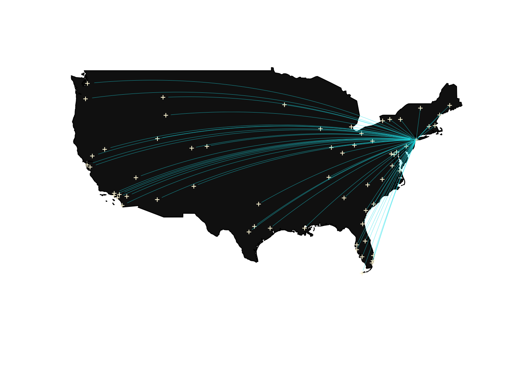

airport = read_csv("tidied_data/airport.csv")
dest = airport %>%
filter(airport != "JFK") %>%
drop_na()
jfk = airport %>%
filter(airport == "JFK")map("world",
regions = c("usa"),
fill = TRUE,
col = "grey8",
ylim = c(21.0, 50.0),
xlim = c(-130.0, -65.0)
)
points(airport$long,
airport$lat,
pch = 3,
cex = 0.5,
col = "cornsilk")
for (i in (1:dim(dest)[1])) {
inter = gcIntermediate(c(jfk$long[1], jfk$lat[1]), c(dest$long[i], dest$lat[i]))
lines(inter, lwd = 0.3, alpha = 0.5, col = "turquoise2")
}
airport = read_csv("tidied_data/airport.csv")
delay = read_csv("tidied_data/delay.csv") %>%
select(airline_name:destination_airport) %>%
mutate(
category = "delay"
)
cancel = read_csv("tidied_data/cancel.csv") %>%
select(airline_name:destination_airport) %>%
mutate(
category = "cancel"
)
summary = bind_rows(delay, cancel)summary_sub =
summary %>%
group_by(destination_airport) %>%
summarise(
count = n()
)
airport =
airport %>%
rename(destination_airport = airport)
all = left_join(summary_sub, airport, by = "destination_airport")content = paste(sep = "<br/>",
"<b><a href='https://www.jfkairport.com/'>John F. Kennedy International Airport</a></b>",
"Jamaica, Queens",
"New York, NY 11430"
)
all %>%
leaflet() %>%
addTiles() %>%
setView(-95, 39, zoom = 4) %>%
addCircleMarkers(~ long, ~ lat, radius = ~ scales::rescale(count, c(1, 10)), color = "rgb(255, 65, 54)",
label = paste("Destination: ", all$municipality, " Count: ", all$count)) %>%
addPopups(-73.77932, 40.63945, content, options = popupOptions(closeButton = TRUE))